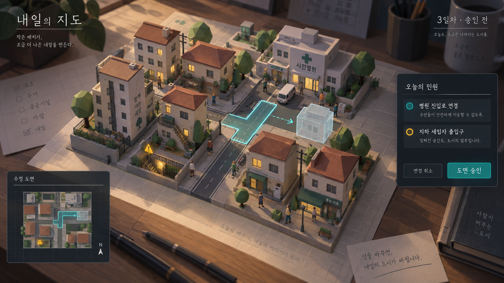

로우폴리로 보는 두 가지 세계
고정된 사선 시점과 작은 모형 공간을 사용하는 게임 화면 방향 시안입니다. AI로 생성한 이미지이며, 실제 엔진 화면이나 보유 에셋을 배치해 렌더링한 결과는 아닙니다. 화면의 수치·배치는 연출 예시입니다.
내일의 지도
원본 이미지 열기

도면에서 수정한 길을 도시 모형 위에 겹쳐 보여줍니다. 병원으로 이어지는 길과 사라질 수 있는 지하 출입구를 함께 살피고 승인하는 순간입니다. 실제 제작에서는 건물·인물의 세부 묘사를 줄이고 길과 출입구의 판독성을 우선합니다.
밭이 줄어드는 세계
원본 이미지 열기
없어진 땅은 빈 격자로 남기고, 위험한 칸에는 균열과 붉은 윤곽을 표시합니다. 방벽으로 지킬 위치를 고르는 플레이를 표현했습니다. 실제 제작에서는 파도·안개·붕괴를 단순화한 효과로 구현하는 방향입니다.